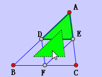
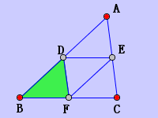
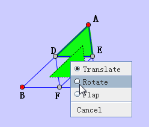
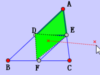

Transform
This action transform the current color-filled polygon to anthoer place.
Step 1. Use action  to draw a color-filled polygon.
to draw a color-filled polygon.
Step 2. Select the action Transform, click the polygon, drag to another place.
Step 3. Release the mouse. The polygon will be transformed to another place.
Note: Polygon is dependent on points. So when you release the mouse, make sure vertex of the polygon has a corresponding point.
For example, in triangle ABC, D is the midpoint of AB. E is the midpoint of AC. F is the midpoint of BC. Obviousely, we know that triangle ADE is congruent to triangle DBF. We can use this action to transform the color-filled tirangle ADE to DBF.
Step 1 :
Step 2: 
Step 3: 
Rotation
This action can be used to rotate the polygon. In the above example, if we want to transform triangle ADE to triangle FDE, we need to rotate the polygon so that they will fit.
The process is similiar, except in Step 2:
Step 2: When we are dragging the polygon, right click the mouse, select Rotate in the popup menu. Now it is in Rotate mode. Click two position as the axis, rotate the diagram. When we have finished rotating, right click the mouse again and select the Transform in the popup menu.


Flip
This action can be used to flip the polygon. This action is similiar to the action Rotation.
JGEX Help